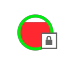

Donnez-moi Internet, s'il vous plaît !
Les concepteurs de l'ordinateur portable XO l'ont créé pour qu'il aie un accès principalement sans fil dans le but qu'il puisse fonctionner correctement dans les pays en voie de développement, là où il est plus rapide et moins cher d'introduire des connexions sans fil que des connexions avec fil.
Les XO sont conçus pour se connecter à d'autres XO en utilisant un réseau maillé. Celui-ci permet à des ordinateurs portables XO à proximité de communiquer directement (donc sans fil) avec d'autres XO sans passer par un fournisseur traditionnel de service Internet (Internet Service Provider, ISP).
Le XO supporte aussi des connexions sans fil pour une connexion directe à Internet. La collaboration avec d'autres XO dans les Activités ne nécessite pas de connexion Internet.
Il y a différentes façons de se connecter à Internet :
- En utilisant un point d'accès sans fil, comme un point d'accès WiFi, mis à disposition par une bibliothèque ou un café, ou encore depuis un endroit qui possède un routeur sans fil, comme une maison.
- En utilisant un serveur d'école mis à disposition par un établissement scolaire.
- En utilisant un câble USB-vers-Ethernet qui se branche sur un modem câblé, un modem DSL ou un réseau local, comme celui proposé par un bâtiment ou une entreprise.
Avant de se connecter
Si vous désirez vous connecter chez vous, vérifiez auprès de votre ISP que votre réseau est protégé par un mot de passe. Votre routeur possède également un mot de mot passe que vous trouverez dans sa documentation. Familiarisez-vous avec les réglages de votre routeur sans fil afin que vous puissiez les régler ou les réparer si besoin était. Vous trouverez de l'aide dans le chapitre Diagnostiquer les pannes.
Vérifiez l'état de votre connexion habituelle comme indiqué dans l'espace en bas à droite du Cadre. Si vous vous êtes connecté avec succès par le passé, votre XO aura mémorisé cette connexion et s'y connectera à l'avenir.
Allez, avec votre XO, dans un lieu où vous savez qu'il y a un point d'accès sans fil (Wireless Access Point, WAP).
Trouvez le nom du réseau (ou SSID), ainsi que son mot de passe s'il est sécurisé par un mot de passe. Le XO le traite comme Clé-sans fil.
Se connecter au réseau
1. Allez sur la Vue de voisinage.
2. Dans le champ Recherche, entrez le nom du réseau auquel vous voulez vous connecter.
Ou faites glisser le pointeur sur l'un des cercles d'accès au réseau jusqu'à ce que vous reconnaissiez le nom d'un réseau sans fil.
3. Connectez le XO en cliquant au centre du cercle.

Les points d'accès sans fil sont représentés par des cercles. Le niveau de remplissage indique la force du signal.

Les points d'accès nécessitant une clé d'accès sont représentés par une icône cadenas.
Les points d'accès auxquels vous vous êtes connecté avec succès deviennent des Favoris et sont représentés par une icône étoile.
Les points d'accès représentant le réseau maillé sont indiqués par une icône cible; une pour le canal 1, une pour le canal 6, et une pour le canal 11. Faites glisser votre pointeur sur le point d'accès pour voir si vous êtes déjà connecté ou si vous devez cliquer pour vous connecter.
= Connecté
= Pas encore connecté
Le nom du point d'accès apparaît lorsque vous glissez votre pointeur sur celui-ci.
Le centre du cercle clignote lorsque le XO essaie de se connecter.
4. Entrez la Clé-sans fil si cela vous est demandé.
Il est possible que vous deviez demander la Clé-sans fil à un professeur ou à un parent.
Lorsque le XO se connecte au réseau, le point d'accès clignote.
5. Une fois que vous êtes connecté, le menu sur le cercle dans Vue de voisinage change, et vous pouvez voir un cercle dans le bas droit du Cadre.
Si la tentative pour vous connecter ne fonctionne pas, le cercle cessera de clignoter mais l'icône de point d'accès n'apparaîtra pas dans le Cadre. Cliquez alors sur le cercle dans Vue de voisinage pour essayer à nouveau - cela peut prendre jusqu'à deux ou trois essais pour réussir à vous connecter.
Pour vous déconnecter du réseau, faites glisser le pointeur sur le point d'accès et cliquez Déconnexion sur le menu.
Une fois que votre XO est connecté, vous pouvez retourner sur la Vue Accueil et lancer l'Activité Naviguer.

Si vous n'avez pas encore ajouté l'Activité Naviguer à vos favoris, cliquez sur la Vue Liste (à gauche) et déroulez jusqu'à trouver l'activité Naviguer. Ajoutez l'Activité à vos favoris en cliquant sur l'étoile qui se trouve à côté d'elle (1). Lancez l'Activité Naviguer pour la première fois en cliquant sur l'icône globe (2). La prochaine fois, vous pourrez utiliser la vue Libre pour le lancer (comme indiqué dans l'étape suivante).
Si vous avez déjà ajouté l'Activité Naviguer à vos favoris, vous pouvez cliquer sur l'icône globe pour ouvrir l'Activité Naviguer et tester votre accès à Internet.
Cliquez sur l'icône globe pour lancer l'Activité Naviguer.
Si vous ne pouvez voir le point d'accès que vous connaissez, il se peut que l'antenne sans fil se trouve trop loin, ou que le point d'accès ne fonctionne correctement. Pour des informations supplémentaire, ou si vous rencontrez des difficultés à obtenir une connexion réseau, référez-vous au chapitre Diagnostic des pannes.
Quelques informations supplémentaires au sujet de votre connexion XO :
-
Votre point d'accès sans fil possède un nom de réseau, également appelé SSID, qui apparaît dans Vue de voisinage. Le XO ne peut reconnaître des SSID qui sont cachés, ce qui est configuré à partir du point d'accès. Référez-vous au chapitre Diagnostic des pannes pour des informations supplémentaires au sujet des SSID cachés.
-
Si vous êtes connecté à Internet, votre XO ne peut figurer sur le réseau maillé, et si votre XO est sur un réseau maillé, il ne peut simultanément être connecté sans fil à Internet.
- Si votre XO ne peut trouver de point réseau Internet disponible après cinq minutes de recherche, il se dirigera par-défaut vers le réseau maillé 1; ce qui lui permettra de se connecter à d'autres XO proches du vôtre.
- Soyez patient, svp; votre XO peut prendre jusqu'à une minute pour trouver d'autres réseaux visibles.
- Parfois, il vous sera demandé d'entrer à nouveau la Clé-sans fil. Entrez-là de nouveau et répétez cette opération jusqu'à ce que votre connexion soit faite.
- Pour des informations supplémentaires sur la connection, voyez, svp, le Support FAQ en ligne.